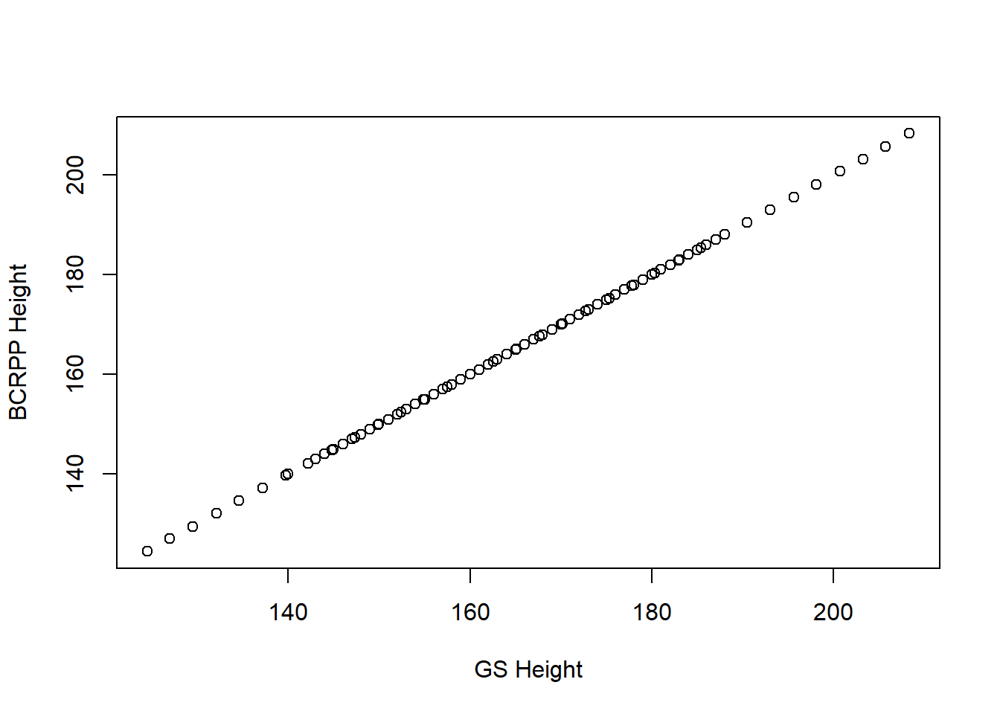
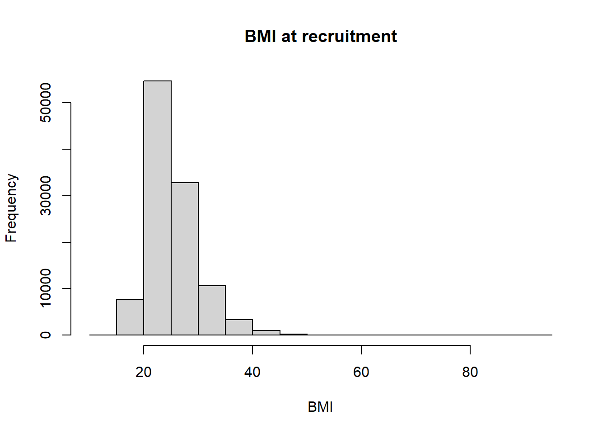
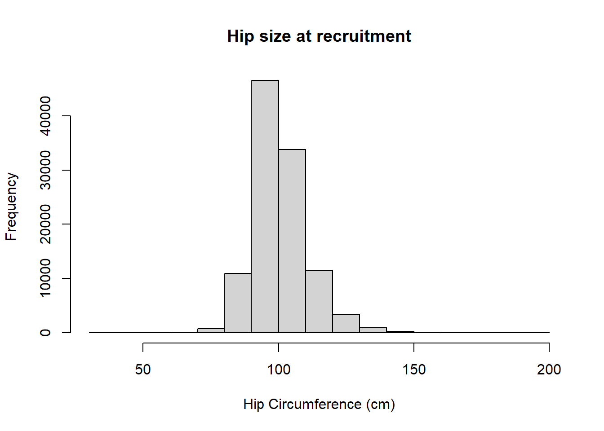
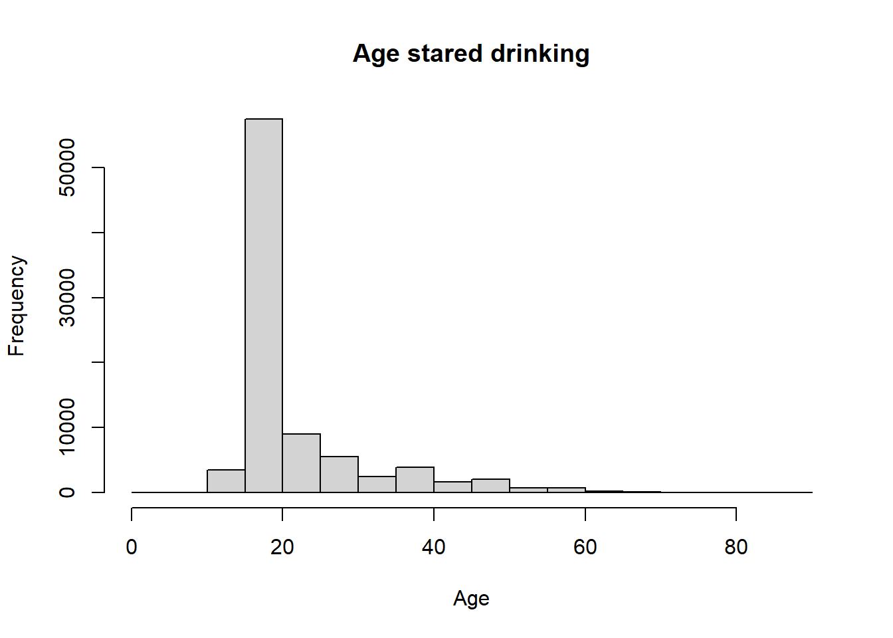
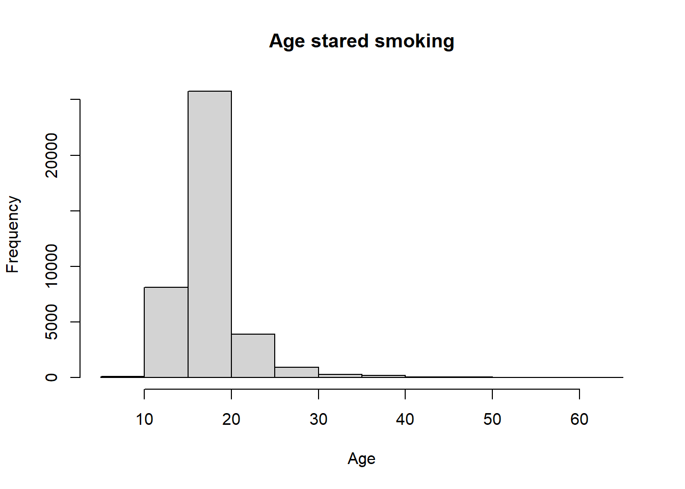
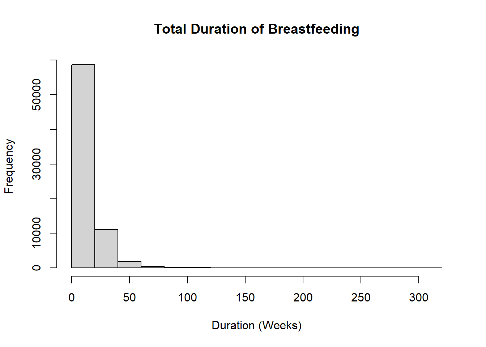
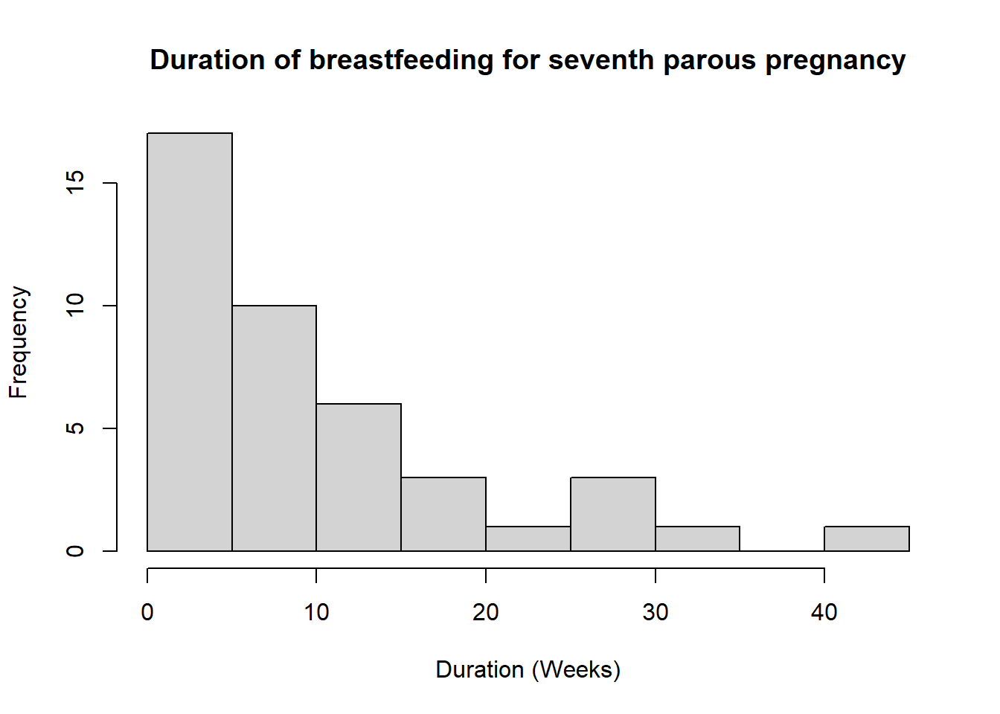
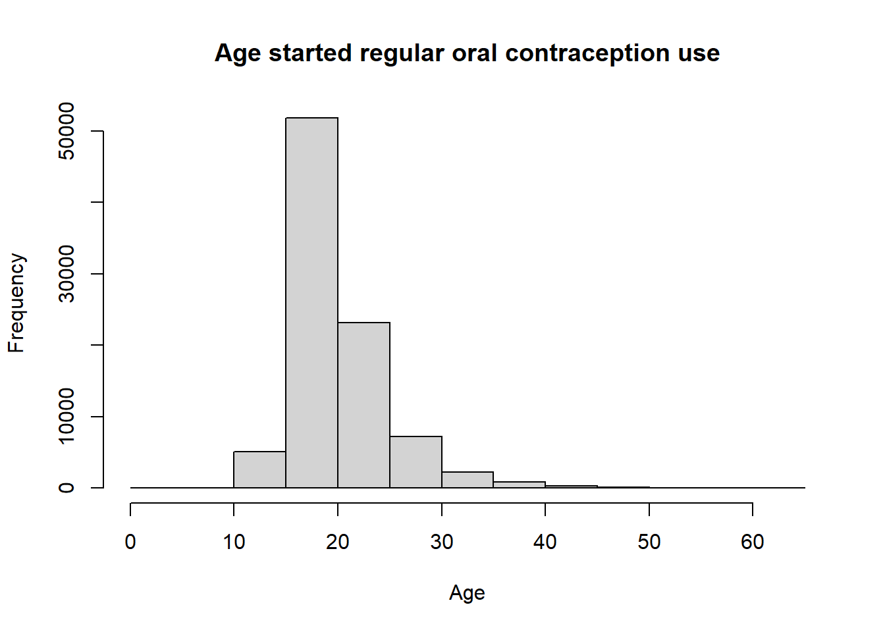
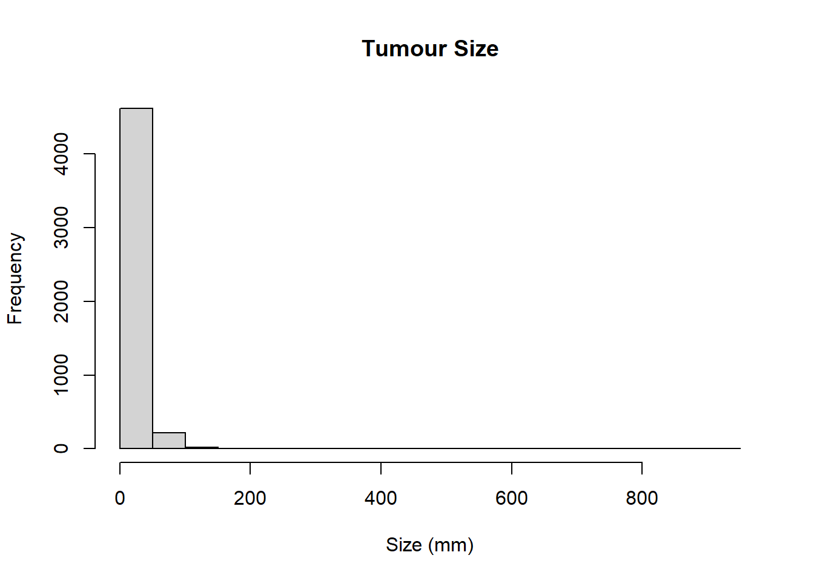

library(tidyverse)
library(lubridate)
library(data.table)Warning: package 'data.table' was built under R version 4.3.2library(readxl)
library(survival)This is code to harmonise between current GS code and BCRPP code.
library(tidyverse)
library(lubridate)
library(data.table)Warning: package 'data.table' was built under R version 4.3.2library(readxl)
library(survival)patient_data <- read.csv("R:/Shared/GENERATIONS/Rollout/v20230927/RDSRiskFactors.csv", na.strings = "NULL")
BCRPP_DataDict <- read_excel("C:/Users/rfrost/Documents/BCRPP Harmonisation/Data Dictionary/BCRP_DataDictionary.xls")
BCRPP_variables <- BCRPP_DataDict$`Variable Name`[!is.na(BCRPP_DataDict$`Variable Name`)]patient_data <- patient_data |>
mutate(subject_id = TCode,
id = TCode,
record_date = case_when(
!is.na(EntryDate_F) ~ as.Date(EntryDate_F, format = "%Y-%m-%d"),
TRUE ~ as.Date("08/08/8000", format = "%d/%m/%Y")),
qcycle = 0,
baseline = 1,
lastfollowup = 0,
## DEMOGRAPHICS ##
#birth_year = as.Date("08-08-8000", format = "%d-%m-%Y"), #Waiting for real years here.
birth_year = case_when(
!is.na(ADOB_F) ~ year(as.Date(ADOB_F, format = "%Y-%m-%d")),
TRUE ~ 888),
sex = 0,
age = case_when(
!is.na(AgeatEntry) ~ AgeatEntry,
TRUE ~ 888), #No error code given for this so improvised.
race = case_when(
ethnew5 == 1 ~ 1, #BCRPP have this coded as 1 ~ White, 2 ~ Black/African American, 3 ~ Asian, 4 ~ Native Hawaiin/Pacific Islander,
ethnew5 == 2 ~ 2, #5 ~ American Indian/Alaska Native, 6 ~ Other (inc. multiracial), 888 ~ Missing
ethnew5 == 3 ~ 3, #We have this coded as 1 ~ White, 2 ~ Black, 3 ~ South Asian, 4 ~ Other/Mixed, 9 ~ Not Known
ethnew5 == 4 ~ 6,
TRUE ~ 888),
ethnicity = 0,
education = case_when(
is.na(educage) ~ 888,
educage > 0 & educage < 18 ~ 1, #This is a heavy assumption of High School till 18, University till 22, and anything after is Postgrad.
educage == 18 ~ 2,
educage < 22 ~ 3,
educage == 22 ~ 4,
educage < 30 ~ 5,
TRUE ~ 888),
AJAncestry = case_when(
AJancestry == 0 ~ 0, #Same coding but adjusting for NA values.
AJancestry == 1 ~ 1,
TRUE ~ 888))patient_data <- patient_data |>
mutate(height = case_when(
bodysizeht %in% c(888, 989, 999) | is.na(bodysizeht) ~ 888, #See above.
TRUE ~ bodysizeht),
weight = case_when(
bodysizewtnow %in% c(888, 989, 999) | is.na(bodysizewtnow) ~ 888,
TRUE ~ bodysizewtnow),
bmi = case_when(
bodysizebminow %in% c(888, 989, 999) | is.na(bodysizebminow) ~ 888,
TRUE ~ bodysizebminow),
waist = case_when(
bodysizewaist %in% c(888, 989, 999) | is.na(bodysizewaist) ~ 888,
TRUE ~ bodysizewaist),
hip = case_when(
bodysizehip %in% c(888, 989, 999) | is.na(bodysizehip) ~ 888,
TRUE ~ bodysizehip),
whr = case_when(
bodysizewhr %in% c(888, 989, 999) | is.na(bodysizewhr) ~ 888,
TRUE ~ bodysizewhr),
bmi_earlyadult = case_when(
bodysizebmi20 %in% c(888, 989, 999) | is.na(bodysizebmi20) | age < 20 ~ 888,
TRUE ~ bodysizebmi20),
bmi_early_adult_est = case_when(
bmi_earlyadult != 888 ~ bmi_earlyadult,
age < 20 | is.na(bodysizewt20) | bodysizewt20 == 999 | height == 888 ~ 888,
TRUE ~ bodysizewt20/((height/100)^2))) #Estimated value of BMI given assumptions made about change of height variable.patient_data <- patient_data |>
mutate(alcoholstopage = if_else(alcoholstopage>age, 888, alcoholstopage),
alcoholstartage = if_else(alcoholstartage>age, 888, alcoholstartage),
alcohol_status = case_when(
R1alcoholstatus == 0 ~ 4, #BRCPP have this coded as 1 ~ Current, 2 ~ Former, 3 ~ Ever, 4 ~ Never, 888 ~ Missing/Unknown
R1alcoholstatus == 2 ~ 2, #We have coded as 0 ~ Never, 1 ~ Current, 2 ~ Former, 9 ~ Unknown
R1alcoholstatus == 1 ~ 1,
is.na(R1alcoholstatus) ~ 888,
TRUE ~ 888),
alcohol_amt = case_when(
!is.na(R1alcoholunits) ~ 8*R1alcoholunits/7, #Conversion from units to grams of alcohol. #Check this and smoking amount for whether it's R1
is.na(R1alcoholunits) ~ 888),
alcohol_init = case_when(
alcohol_status == 4 ~ 777,
alcoholstartage %in% c(888, 999) ~ 888, #Maybe remove when don't work with age at entry as well?
alcoholstartage > alcoholstopage ~ 888,
is.na(alcoholstartage) ~ 888,
TRUE ~ alcoholstartage),
alcohol_stop = case_when(
alcohol_status == 4 ~ 777, #haven't started
alcohol_status == 1 ~ 666, #started - haven't stopped
alcoholstopage %in% c(888, 999) | is.na(alcoholstopage) ~ 888,
alcoholstartage > alcoholstopage ~ 888,
alcohol_status == 2 ~ alcoholstopage, #started and stopped
TRUE ~ alcoholstopage),
alcohol_dur = case_when(
alcohol_status == 4 ~ 777,
alcohol_init == 888 ~ 888,
alcoholstartage > alcoholstopage ~ 888,
alcohol_status == 1 ~ if_else(age == alcohol_init, 0.5, age - alcohol_init),
alcohol_stop == 888 ~ 888,
alcohol_status == 2 ~ if_else(alcohol_stop == alcohol_init, 0.5, alcohol_stop - alcohol_init),
alcohol_status == 888 ~ 888,
TRUE ~ 888))patient_data <- patient_data |>
mutate(smokingstopage = if_else(smokingstopage>age, 888, smokingstopage),
smokingstartage = if_else(smokingstartage>age, 888, smokingstartage),
smoking_status = case_when(
R1smokingstatus == 0 ~ 4, #BRCPP have this coded as 1 ~ Current, 2 ~ Former, 3 ~ Ever, 4 ~ Never, 888 ~ Missing/Unknown
R1smokingstatus == 2 ~ 2, #We have coded as 0 ~ Never, 1 ~ Current, 2 ~ Former, 9 ~ Unknown
R1smokingstatus == 1 ~ 1,
is.na(R1smokingstatus) ~ 888,
TRUE ~ 888),
smoking_amt = case_when(
R1smokingcigs %in% c(666, 999) | is.na(R1smokingcigs) ~ 888,
TRUE ~ R1smokingcigs),
smoking_init = case_when(
smoking_status == 4 ~ 777,
smokingstartage %in% c(888, 999) ~ 888,
smokingstartage > smokingstopage ~ 888,
is.na(smokingstartage) ~ 888,
TRUE ~ smokingstartage),
smoking_stop = case_when(
smoking_status == 4 ~ 777, #haven't started
smoking_status == 1 ~ 666, #started - haven't stopped
smokingstopage %in% c(888, 999) | is.na(smokingstopage) ~ 888,
smokingstartage > smokingstopage ~ 888,
smoking_status == 2 ~ smokingstopage, #started and stopped
TRUE ~ smokingstopage),
smoking_dur = case_when(
smoking_status == 4 ~ 777,
smoking_init == 888 ~ 888,
smoking_status == 1 ~ if_else(age == smoking_init, 0.5, age - smoking_init),
smoking_stop == 888 ~ 888,
smoking_status == 2 ~ if_else(smoking_stop == smoking_init, 0.5, smoking_stop - smoking_init),
smoking_status == 888 ~ 888))patient_data <- patient_data |>
mutate(fhx_fdr_brca = case_when(
fambrca == 0 ~ 0,
fambrca == 1 ~ 1,
fambrca == 9 | is.na(fambrca) ~ 888),
Biopsies_yesno = 888,
Biopsies_number = 888,
BBD_history = case_when(
brbendis == 1 ~ 1, #BCRPP have coded this as 0 ~ No, 1 ~ Yes, 888 ~ Missing/Unknown.
brbendis == 2 ~ 0, #We have this coded as 1 ~ Yes, 2 ~ No, 999 ~ Not known.
is.na(brbendis) | brbendis == 999 ~ 888,
TRUE ~ 888),
BBD_number = case_when(
brbendisage1 > age ~ 0,
brbenN < 5 ~ brbenN, #BCRPP records above 4 as 5 so adjustment.
brbenN > 4 ~ 5,
is.na(brbenN) | brbenN == 999 ~ 888),
BBD_type1 = 888,
BBD_type2 = 888,
BBD_year2 = 8888,
BBD_type3 = 888,
BBD_year3 = 8888,
BBD_type4 = 888,
BBD_year4 = 8888,
BBD_year1 = case_when(
brbendisage1 %in% c(888, 889, 999) ~ 8888, #Distinguish between missing and NA.
brbendisage1 > age ~ 7777,
is.na(brbendisage1) ~ 7777,
TRUE ~ brbendisage1 + year(ADOB_F)))
#BBD_year2 - not collected.
#BBD_type2 - not collected.
#BBD_year3 - not collected.
#BBD_type3 - not collected.
#BBD_year4 - not collected.
#BBD_type4 - not collected.patient_data <- patient_data |>
dplyr::rename(meno_reasonGS = meno_reason, meno_ageGS = meno_age)
patient_data <- patient_data |>
mutate(pregdate_1_f = if_else(as.Date(pregdate_1_f, format = "%Y-%m-%d")<record_date, as.Date(pregdate_1_f, format = "%Y-%m-%d"), NA), #removing dates past entry - we are only concerned with R1
pregdate_2_f = if_else(as.Date(pregdate_2_f, format = "%Y-%m-%d")<record_date, as.Date(pregdate_2_f, format = "%Y-%m-%d"), NA),
pregdate_3_f = if_else(as.Date(pregdate_3_f, format = "%Y-%m-%d")<record_date, as.Date(pregdate_3_f, format = "%Y-%m-%d"), NA),
pregdate_4_f = if_else(as.Date(pregdate_4_f, format = "%Y-%m-%d")<record_date, as.Date(pregdate_4_f, format = "%Y-%m-%d"), NA),
pregdate_5_f = if_else(as.Date(pregdate_5_f, format = "%Y-%m-%d")<record_date, as.Date(pregdate_5_f, format = "%Y-%m-%d"), NA),
pregdate_6_f = if_else(as.Date(pregdate_6_f, format = "%Y-%m-%d")<record_date, as.Date(pregdate_6_f, format = "%Y-%m-%d"), NA),
pregdate_7_f = if_else(as.Date(pregdate_7_f, format = "%Y-%m-%d")<record_date, as.Date(pregdate_7_f, format = "%Y-%m-%d"), NA),
pregdate_8_f = if_else(as.Date(pregdate_8_f, format = "%Y-%m-%d")<record_date, as.Date(pregdate_8_f, format = "%Y-%m-%d"), NA),
pregdate_9_f = if_else(as.Date(pregdate_9_f, format = "%Y-%m-%d")<record_date, as.Date(pregdate_9_f, format = "%Y-%m-%d"), NA),
missing_age_preg = case_when(
is.na(pregparitycnt) | pregparitycnt == 99 ~ 888,
(pmax(pregparitycnt, 0) > (9 - (is.na(pregdate_1_f) + is.na(pregdate_2_f) + is.na(pregdate_3_f) + is.na(pregdate_4_f) + is.na(pregdate_5_f) +
is.na(pregdate_6_f) + is.na(pregdate_7_f) + is.na(pregdate_8_f) + is.na(pregdate_9_f)))) ~ 1, #Not enough dates for parity - can't do agepreg_x
(pmax(pregparitycnt, 0) < (9 - (is.na(pregdate_1_f) + is.na(pregdate_2_f) + is.na(pregdate_3_f) + is.na(pregdate_4_f) + is.na(pregdate_5_f) +
is.na(pregdate_6_f) + is.na(pregdate_7_f) + is.na(pregdate_8_f) + is.na(pregdate_9_f)))) ~ 2, #Too many dates, will take bottom x amount for parity = x
(pmax(pregparitycnt, 0) == (9 - (is.na(pregdate_1_f) + is.na(pregdate_2_f) + is.na(pregdate_3_f) + is.na(pregdate_4_f) + is.na(pregdate_5_f) +
is.na(pregdate_6_f) + is.na(pregdate_7_f) + is.na(pregdate_8_f) + is.na(pregdate_9_f)))) ~ 0),
agemenarche = case_when(
menarcheage %in% c(888, 999) | is.na(menarcheage) ~ 888, #Distinguish between missing and NA.
menarcheage == 777 ~ 777,
menarcheage > age ~ 777,
TRUE ~ menarcheage),
parous = case_when(
pregparitycnt>0 & pregparitycnt != 99 ~ 1, #-1 refers to no pregnancies but BCRPP doesn't record this so go to 0.
pregparitycnt %in% c(0,-1) ~ 0,
is.na(pregparitycnt) | pregparitycnt == 99 ~ 888),
parity = case_when(
pregparitycnt>0 & pregparitycnt != 99 ~ pregparitycnt, #-1 refers to no pregnancies but BCRPP doesn't record this so go to 0.
pregparitycnt %in% c(0,-1) ~ 0,
is.na(pregparitycnt) | pregparitycnt == 99 ~ 888),
age_preg1 = case_when(
(missing_age_preg == 1 & parity >= 1) | missing_age_preg == 888 | parity == 888 ~ 888, #Missing Data.
parity == 0 ~ 777, #Subject is nonparous - no parous births.
TRUE ~ floor(as.numeric(as.Date(pregdate_1_f, format = "%Y-%m-%d") - as.Date(ADOB_F, format = "%Y-%m-%d"))/365)),
age_preg2 = case_when(
(missing_age_preg == 1 & parity >= 2) | missing_age_preg == 888 | parity == 888 ~ 888,
parity == 0 ~ 777,
parity < 2 ~ 666, #666 - no pregnancy
TRUE ~ floor(as.numeric(as.Date(pregdate_2_f, format = "%Y-%m-%d") - as.Date(ADOB_F, format = "%Y-%m-%d"))/365)),
age_preg3 = case_when(
(missing_age_preg == 1 & parity >= 3) | missing_age_preg == 888 | parity == 888 ~ 888,
parity == 0 ~ 777,
parity < 3 ~ 666,
TRUE ~ floor(as.numeric(as.Date(pregdate_3_f, format = "%Y-%m-%d") - as.Date(ADOB_F, format = "%Y-%m-%d"))/365)),
age_preg4 = case_when(
(missing_age_preg == 1 & parity >= 4) | missing_age_preg == 888 | parity == 888 ~ 888,
parity == 0 ~ 777,
parity < 4 ~ 666,
TRUE ~ floor(as.numeric(as.Date(pregdate_4_f, format = "%Y-%m-%d") - as.Date(ADOB_F, format = "%Y-%m-%d"))/365)),
age_preg5 = case_when(
(missing_age_preg == 1 & parity >= 5) | missing_age_preg == 888 | parity == 888 ~ 888,
parity == 0 ~ 777,
parity < 5 ~ 666,
TRUE ~ floor(as.numeric(as.Date(pregdate_5_f, format = "%Y-%m-%d") - as.Date(ADOB_F, format = "%Y-%m-%d"))/365)),
age_preg6 = case_when(
(missing_age_preg == 1 & parity >= 6) | missing_age_preg == 888 | parity == 888 ~ 888,
parity == 0 ~ 777,
parity < 6 ~ 666,
TRUE ~ floor(as.numeric(as.Date(pregdate_6_f, format = "%Y-%m-%d") - as.Date(ADOB_F, format = "%Y-%m-%d"))/365)),
age_preg7 = case_when(
(missing_age_preg == 1 & parity >= 7) | missing_age_preg == 888 | parity == 888 ~ 888,
parity == 0 ~ 777,
parity < 7 ~ 666,
TRUE ~ floor(as.numeric(as.Date(pregdate_7_f, format = "%Y-%m-%d") - as.Date(ADOB_F, format = "%Y-%m-%d"))/365)),
age_preg8 = case_when(
(missing_age_preg == 1 & parity >= 8) | missing_age_preg == 888 | parity == 888 ~ 888,
parity == 0 ~ 777,
parity < 8 ~ 666,
TRUE ~ floor(as.numeric(as.Date(pregdate_8_f, format = "%Y-%m-%d") - as.Date(ADOB_F, format = "%Y-%m-%d"))/365)),
age_preg9 = case_when(
(missing_age_preg == 1 & parity >= 9) | missing_age_preg == 888 | parity == 888 ~ 888,
parity == 0 ~ 777,
parity < 9 ~ 666,
TRUE ~ floor(as.numeric(as.Date(pregdate_9_f, format = "%Y-%m-%d") - as.Date(ADOB_F, format = "%Y-%m-%d"))/365)),
age_preg10 = case_when(
missing_age_preg == 1 & parity >=10 | missing_age_preg == 888 | parity == 888 ~ 888,
parity == 0 ~ 777,
parity < 10 ~ 666),
breastfeed_dur_b1 = case_when( #we measure in weeks, BCRPP measure in months.
parity == 0 ~ 777,
missing_age_preg == 0 & bf_1 != 999 & !is.na(bf_1) ~ bf_1/4, #Could change for more precision
#missing_age_preg == 0 & bf_1 != 999 & !is.na(bf_1) ~ 555, #555 indicates still breastfeeding at start of study - so length unknown.
TRUE ~ 888),
breastfeed_dur_b2 = case_when(
parity == 0 ~ 777,
missing_age_preg == 0 & bf_2 != 999 & !is.na(bf_2) ~ bf_2/4,
#missing_age_preg == 0 & bf_2 != 999 & !is.na(bf_2) ~ 555,
parity < 2 ~ 666, #no child to breastfeed - THIS IS MY CURRENT INTERPRETATION, ADVISE FROM BCRPP WHEN CONTACTED.
TRUE ~ 888),
breastfeed_dur_b3 = case_when(
parity == 0 ~ 777,
missing_age_preg == 0 & bf_3 != 999 & !is.na(bf_3) ~ bf_3/4,
#missing_age_preg == 0 & bf_3 != 999 & !is.na(bf_3) ~ 555,
parity < 3 ~ 666,
TRUE ~ 888),
breastfeed_dur_b4 = case_when(
parity == 0 ~ 777,
missing_age_preg == 0 & bf_4 != 999 & !is.na(bf_4) ~ bf_4/4,
#missing_age_preg == 0 & bf_4 != 999 & !is.na(bf_4) ~ 555,
parity < 4 ~ 666,
TRUE ~ 888),
breastfeed_dur_b5 = case_when(
parity == 0 ~ 777,
missing_age_preg == 0 & bf_5 != 999 & !is.na(bf_5) ~ bf_5/4,
#missing_age_preg == 0 & bf_5 != 999 & !is.na(bf_5) ~ 555,
parity < 5 ~ 666,
TRUE ~ 888),
breastfeed_dur_b6 = case_when(
parity == 0 ~ 777,
missing_age_preg == 0 & bf_6 != 999 & !is.na(bf_6) ~ bf_6/4,
#missing_age_preg == 0 & bf_6 != 999 & !is.na(bf_6) ~ 555,
parity < 6 ~ 666,
TRUE ~ 888),
breastfeed_dur_b7 = case_when(
parity == 0 ~ 777,
missing_age_preg == 0 & bf_7 != 999 & !is.na(bf_7) ~ bf_7/4,
#missing_age_preg == 0 & bf_7 != 999 & !is.na(bf_7) ~ 555,
parity < 7 ~ 666,
TRUE ~ 888),
breastfeed_dur_b8 = case_when(
parity == 0 ~ 777,
missing_age_preg == 0 & bf_8 != 999 & !is.na(bf_8) ~ bf_8/4,
#missing_age_preg == 0 & bf_8 != 999 & !is.na(bf_8) ~ 555,
parity < 8 ~ 666,
TRUE ~ 888),
breastfeed_dur_b9 = case_when(
parity == 0 ~ 777,
missing_age_preg == 0 & bf_9 != 999 & !is.na(bf_9) ~ bf_9/4,
#missing_age_preg == 0 & bf_9 != 999 & !is.na(bf_9) ~ 555,
parity < 9 ~ 666,
TRUE ~ 888),
breastfeed_dur_b10 = case_when(
parity == 0 ~ 777,
parity < 10 ~ 666,
TRUE ~ 888),
breastfeed_dur = case_when(
parity == 0 ~ 777, #Nonparous.
missing_age_preg == 1 | missing_age_preg == 888 ~ 888, #If any lengths are unknown - so is total length. Could potentially report total KNOWN length.
breastfeed_dur_b1 == 888 | breastfeed_dur_b2 == 888 | breastfeed_dur_b3 == 888 | breastfeed_dur_b4 == 888 |
breastfeed_dur_b5 == 888 | breastfeed_dur_b6 == 888 | breastfeed_dur_b7 == 888 | breastfeed_dur_b8 == 888 |
breastfeed_dur_b9 == 888 ~ 888,
#breastfeed_dur_b1 == 555 | breastfeed_dur_b2 == 555 | breastfeed_dur_b3 == 555 | breastfeed_dur_b4 == 555 |
#breastfeed_dur_b5 == 555 | breastfeed_dur_b6 == 555 | breastfeed_dur_b7 == 555 | breastfeed_dur_b8 == 555 |
#breastfeed_dur_b9 == 555 ~ 555,
TRUE ~ if_else(breastfeed_dur_b1!=666, breastfeed_dur_b1, 0) + if_else(breastfeed_dur_b2!=666, breastfeed_dur_b2, 0) +
if_else(breastfeed_dur_b3!=666, breastfeed_dur_b3, 0) + if_else(breastfeed_dur_b4!=666, breastfeed_dur_b4, 0) +
if_else(breastfeed_dur_b5!=666, breastfeed_dur_b5, 0) + if_else(breastfeed_dur_b6!=666, breastfeed_dur_b6, 0) +
if_else(breastfeed_dur_b7!=666, breastfeed_dur_b7, 0) + if_else(breastfeed_dur_b8!=666, breastfeed_dur_b8, 0) +
if_else(breastfeed_dur_b9!=666, breastfeed_dur_b9, 0)
),
breastfeed = case_when(
breastfeed_dur == 777 ~ 777, #Nonparous.
(!breastfeed_dur_b1 %in% c(0,666,777,888)) | (!breastfeed_dur_b2 %in% c(0,666,777,888)) | (!breastfeed_dur_b3 %in% c(0,666,777,888)) | #If we have ANY known knowledge of breastfeeding, can report as breastfed.
(!breastfeed_dur_b4 %in% c(0,666,777,888)) | (!breastfeed_dur_b5 %in% c(0,666,777,888)) | (!breastfeed_dur_b6 %in% c(0,666,777,888)) |
(!breastfeed_dur_b7 %in% c(0,666,777,888)) | (!breastfeed_dur_b8 %in% c(0,666,777,888)) | (!breastfeed_dur_b9 %in% c(0,666,777,888)) ~ 1,
breastfeed_dur == 0 ~ 666, #Might discuss about cutoffs for breastfeeding. i.e. if they breastfed for 1 week did they likely breastfeed?
TRUE ~ 888), ##### Need to discuss interplay of recoding for breastfeed_dur_bx and making sure whatever they do works with our duration and existence variable!!
ocuse_ever = case_when(
ocever == 0 ~ 0, #Never
ocever == 1 ~ 1, #Ever
is.na(ocever) ~ 888), #NK
ocuse_current = case_when(
ocstatus %in% c(0,1) ~ 0, #We have this coded as 0 ~ never, 1 ~ former, 2 ~ current, 888 ~ error, 999/9999 ~ NK
ocstatus == 2 ~ 1, #BCRPP have this coded as 0 ~ no, 1 ~ yes, 888 ~ missing/unknown
ocstatus %in% c(888, 999, 9999) | is.na(ocstatus) ~ 888),
ocuse_start = case_when(
ocstatus == 0 ~ 777, #never started
oc1age %in% c(888, 999) | is.na(oc1age) ~ 888,
oc1age > AgeatEntry ~ 888,
oc1age <= AgeatEntry ~ oc1age),
ocuse_stop = case_when(
ocstatus == 0 ~ 777, #never started
ocstatus == 2 ~ 666, #currently using
ocLage %in% c(888, 999) | is.na(ocLage) ~ 888,
ocLage < oc1age ~ 888,
ocstatus == 1 & ocLage <= AgeatEntry ~ ocLage,
TRUE ~ 888),
ocuse_dur = case_when(
ocstatus == 0 ~ 777,
ocstatus == 888 ~ 888,
ocuse_start == 888 ~ 888, #they want duration in months, we have it in years.
ocstatus == 2 & AgeatEntry > ocuse_start ~ if_else(AgeatEntry == ocuse_start, 6, 12*(AgeatEntry - ocuse_start)),
ocuse_stop == 888 ~ 888,
ocstatus == 1 ~ if_else(ocuse_stop == ocuse_start, 0.5, ocuse_stop - ocuse_start),
TRUE ~ 888
),
othcontracep_ever = 888,
othcontracep_current = 888,
meno_status = case_when(
R1menopause %in% c(1,3) ~ 1, #BCRPP have this coded as 1~Post, 2~Pre, 3~Peri, 888~Unknown/Missing
R1menopause %in% c(2,4) ~ 2, #We have this coded as 1~Post, 2~Pre, 3~Assumed Post, 4~Assumed Pre, 8~Not Known, 9~Never had periods, 10~Didn't complete
R1menopause %in% c(8,9, 10) | is.na(R1menopause) ~ 888),
meno_age = case_when(
meno_status == 2 ~ 777,
meno_ageGS %in% c(888,999) | is.na(meno_ageGS) ~ 888,
meno_ageGS == 777 | meno_ageGS > age ~ 777,
TRUE ~ meno_ageGS),
#BCRPP have this coded as 1~Natural, 2~Surgical. 3~Radiation/Chemo, 4~Medication, 5~Artificial/Induced, 777~Premeno, 888~Missing/Unknown
#We have this coded as 1~Natural, 2~Surgery (Bilat), 3~Surgery (Hyst), 4~Surgery (Not Known), 5~chemo/radio/treatment, 6~Not Known
#7~Other, 8~Not Known (On Hormones), 9~Not Known (HRT), 10~Not Known (Stress), 11~Premeno (Preg/bf), 12~Perimeno, 13~Nat Meno on HRT/OC
#14~ED/Low Weight, 15~Illness, 16~Premeno, 17~Status NK, 18~Surgery (Not Bilat or Hyst), 19~Never Periods, 777~Premeno.
meno_reason = case_when(
meno_status == 2 ~ 777,
meno_reasonGS == 1 ~ 1,
meno_reasonGS %in% c(2, 3, 4, 18) ~ 2,
meno_reasonGS == 5 ~ 3, #Treatments also sent here - worth reviewing.
meno_reasonGS == 13 ~ 4, #Talk to Montse about this
FALSE ~ 5,
meno_reasonGS %in% c(11, 16, 777) ~ 777,
meno_reasonGS %in% c(6,7,8,9,10,12,14,15,17,19) ~ 888,
TRUE ~ 888))#Altering surrent variables to replace NAs so coding new variables is easier.
patient_data[grepl("HRTstartage_", colnames(patient_data))][is.na(patient_data[grepl("HRTstartage_", colnames(patient_data))])] <- 888
patient_data[grepl("HRTtype1", colnames(patient_data))][is.na(grepl("HRTtype1", colnames(patient_data)))] <- '888'
patient_data <- patient_data |>
#mutate(across(starts_with('HRTtype1')), ~ if_else(is.na(.), "888", .)) |> #NA makes hrtep_dur code much harder so remove to new category
#mutate(across(starts_with('HRTstartage_')), ~ if_else(is.na(.), 888, .)) |>
mutate(hrt1age = if_else(hrt1age>AgeatEntry, NA, hrt1age),
hrtLage = if_else(hrtLage>AgeatEntry, NA, hrtLage),
hrtuse = case_when(
meno_status == 2 ~ 0,
hrtever == 0 ~ 0, #BCRPP have this coded as 0 ~ never, 1 ~ current, 2 ~ former, 3 ~ ever, 888 ~ missing/unknown
hrtever == 1 ~ 3, #We have this coded as 0 ~ never, 1 ~ ever, 888/999 ~ error/not known
hrtever %in% c(888,999) | is.na(hrtever) ~ 888),
hrt_dur = case_when( #BCRPP measure in months, we have data in ages.
meno_status == 2 ~ 666, #Never used - premenopausal
hrtever == 0 ~ 777, #Never used
is.na(hrt1age) | is.na(hrtLage) ~ 888, #alternate codes as data overlaps. BCRPP use 666,777,888.
hrt1age <= hrtLage ~ if_else(hrtLage==hrt1age, 6, 12*(hrtLage - hrt1age))),
hrtdur_1 = case_when(
HRTendage_1 < HRTstartage_1 | is.na(HRTstartage_1) | is.na(HRTendage_1) | HRTstartage_1 > AgeatEntry ~ NA,
HRTendage_1 > AgeatEntry ~ if_else(HRTstartage_1==AgeatEntry, 0.5, AgeatEntry - HRTstartage_1),
TRUE ~ if_else(HRTstartage_1 == HRTendage_1, 0.5, HRTendage_1 - HRTstartage_1)),
hrtdur_2 = case_when(
HRTendage_2 < HRTstartage_2 | is.na(HRTstartage_2) | is.na(HRTendage_2) | HRTstartage_2 > AgeatEntry ~ NA,
HRTendage_1 > AgeatEntry ~ if_else(HRTstartage_2==AgeatEntry, 0.5, AgeatEntry - HRTstartage_2),
TRUE ~ if_else(HRTstartage_2 == HRTendage_2, 0.5, HRTendage_2 - HRTstartage_2)),
hrtdur_3 = case_when(
HRTendage_3 < HRTstartage_3 | is.na(HRTstartage_3) | is.na(HRTendage_3) | HRTstartage_3 > AgeatEntry ~ NA,
HRTendage_1 > AgeatEntry ~ if_else(HRTstartage_3==AgeatEntry, 0.5, AgeatEntry - HRTstartage_3),
TRUE ~ if_else(HRTstartage_3 == HRTendage_3, 0.5, HRTendage_3 - HRTstartage_3)),
hrtdur_4 = case_when(
HRTendage_4 < HRTstartage_4 | is.na(HRTstartage_4) | is.na(HRTendage_4) | HRTstartage_4 > AgeatEntry ~ NA,
HRTendage_1 > AgeatEntry ~ if_else(HRTstartage_4==AgeatEntry, 0.5, AgeatEntry - HRTstartage_4),
TRUE ~ if_else(HRTstartage_4 == HRTendage_4, 0.5, HRTendage_4 - HRTstartage_4)),
hrtuse_ep = case_when(
hrtuse == 0 ~ 0,
hrtprep == 2 ~ 3, #if they report at beginning have used EP, can say they have ever used it.
(HRTtype1_1 == "EandP")*(HRTstartage_1<AgeatEntry)*(!is.na(HRTstartage_1)) +
(HRTtype1_2 == "EandP")*(HRTstartage_2<AgeatEntry)*(!is.na(HRTstartage_2)) +
(HRTtype1_3 == "EandP")*(HRTstartage_3<AgeatEntry)*(!is.na(HRTstartage_3)) +
(HRTtype1_4 == "EandP")*(HRTstartage_4<AgeatEntry)*(!is.na(HRTstartage_4)) > 0 ~ 3,
(HRTtype1_1 == "EandP") + (HRTtype1_1 == "EandP") + (HRTtype1_1 == "EandP") + (HRTtype1_1 == "EandP") > 0 ~ 888,
TRUE ~ 0),
hrtep_dur = (HRTtype1_1 == "EandP")*hrtdur_1 +(HRTtype1_2 == "EandP")*hrtdur_2 +(HRTtype1_3 == "EandP")*hrtdur_3 +(HRTtype1_4 == "EandP")*hrtdur_4,
hrtep_dur = case_when(
meno_status == 2 ~ 666, #Never used - premenopausal
hrtuse_ep == 0 ~ 777,
is.na(hrtep_dur) ~ 888,
TRUE ~ hrtep_dur),
hrtuse_eonly = case_when(
hrtuse == 0 ~ 0,
hrtprep == 1 ~ 3, #if they report at beginning have used E, can say they have ever used it.
(HRTtype1_1 == "Eonly")*(HRTstartage_1<AgeatEntry)*(!is.na(HRTstartage_1)) +
(HRTtype1_2 == "Eonly")*(HRTstartage_2<AgeatEntry)*(!is.na(HRTstartage_2)) +
(HRTtype1_3 == "Eonly")*(HRTstartage_3<AgeatEntry)*(!is.na(HRTstartage_3)) +
(HRTtype1_4 == "Eonly")*(HRTstartage_4<AgeatEntry)*(!is.na(HRTstartage_4)) > 0 ~ 3,
(HRTtype1_1 == "Eonly") + (HRTtype1_1 == "Eonly") + (HRTtype1_1 == "Eonly") + (HRTtype1_1 == "Eonly") > 0 ~ 888,
TRUE ~ 0),
hrteonly_dur = (HRTtype1_1 == "Eonly")*hrtdur_1 +(HRTtype1_2 == "Eonly")*hrtdur_2 +(HRTtype1_3 == "Eonly")*hrtdur_3 +(HRTtype1_4 == "Eonly")*hrtdur_4,
hrteonly_dur = case_when(
meno_status == 2 ~ 666, #Never used - premenopausal
hrtuse_eonly==0 ~ 777,
is.na(hrteonly_dur) ~ 888,
TRUE ~ hrteonly_dur
)
)patient_data <- patient_data |>
mutate(pa_mets = case_when(
PhysMetRecTot %in% c(8888,9999) | is.na(PhysMetRecTot) ~ 888, #They use 888 for error but we have data above 888?
TRUE ~ PhysMetRecTot),
pa_pct = case_when(
pa_mets == 888 ~ 888,
TRUE ~ rank(pa_mets)/(length(pa_mets) - sum(pa_mets == 888)))
)patient_data <- patient_data |>
mutate(
screen_ever = 888,
screen_start = 888,
lastscreen_year = 888,
Mam_Qdate = "8000-08-08",
MamYear = 888,
MamAge = 888,
MamBMI = 888,
MamMenoStat = 888,
MamHRTCurrent = 888,
MamType = 888,
MamProcess = 888,
ThreshPkg = 888,
ThreshPkg_detail = 888,
VolDenSoftware = 888,
VolDenSoftware_detail = 888,
PDArea_A = 888,
DenArea_A = 888,
NonDArea_A = 888,
MamDensity = 888
)length(unique(patient_data$subject_id)) - nrow(patient_data)[1] 0Checking we have no doubled or missing id variables. Should output as 0 if so.
summary(patient_data$record_date[patient_data$record_date!=as.Date("08/08/8000", format = "%d/%m/%Y")]) Min. 1st Qu. Median Mean 3rd Qu. Max.
"1993-09-10" "1997-10-30" "1999-04-14" "1999-05-10" "2000-09-03" "2014-06-01" hist(patient_data$record_date[patient_data$record_date!=as.Date("08/08/8000", format = "%d/%m/%Y")], breaks = 30,
main = "Record Date", xlab = "Date")
Looks fine for record dates.
These variables are all constants given the structure of our study. All variables are recorded at baseline at initial q cycle.
summary(as.factor(patient_data$qcycle)) 0
116664 summary(as.factor(patient_data$baseline)) 1
116664 summary(as.factor(patient_data$lastfollowup)) 0
116664 summary(patient_data$birth_year[patient_data$birth_year!=888]) Min. 1st Qu. Median Mean 3rd Qu. Max.
1898 1940 1950 1951 1962 1996 hist(patient_data$birth_year[patient_data$birth_year!=888])summary(as.factor(patient_data$sex)) 0
116664 Generation study is all female - may need to dicuss existence of trans participants within the study. This was brought up briefly but I have not followed up.
summary(patient_data$age[patient_data$age!=888]) Min. 1st Qu. Median Mean 3rd Qu. Max.
16.00 37.00 48.00 47.21 58.00 102.00 hist(patient_data$age[patient_data$age!=888], main = "Age at start of study", xlab = "Age")BCRPP have this coded as 1 ~ White, 2 ~ Black/African American, 3 ~ Asian, 4 ~ Native Hawaiin/Pacific Islander, 5 ~ American Indian/Alaska Native, 6 ~ Other (inc. multiracial), 888 ~ Missing. We have this coded as 1 ~ White, 2 ~ Black, 3 ~ South Asian, 4 ~ Other/Mixed, 9 ~ Not Known. Table should reflect proper conversion to BCRPP coding system.
summary(as.factor(patient_data$race)) 1 2 3 6 888
112379 252 404 640 2989 table(patient_data$ethnew5, patient_data$race, useNA = "always")
1 2 3 6 888 <NA>
1 112379 0 0 0 0 0
2 0 252 0 0 0 0
3 0 0 404 0 0 0
4 0 0 0 640 0 0
9 0 0 0 0 82 0
<NA> 0 0 0 0 2907 0We do not have data on participants ethnicity in the same way that BCRPP uses it.
summary(as.factor(patient_data$ethnicity)) 0
116664 We only have data on age left education. In order to provide some information without distinct value as BCRPP requires, we made a linear assumption. We assumed high school continued until age 18, university until age 22 and a postgrad window of 23-30 years old. Anything older we coded as unknown. BCRPP code this as 1 ~ less than high school, 2 ~ high school, 3 ~ some college education, 4 ~ university degree, 5 ~ postgrad.
summary(as.factor(patient_data$education)) 1 2 3 4 5 888
47254 17159 22679 10588 9316 9668 We have the same coding. 0 ~ No AJ ancestry, 1 ~ AJ ancestry
summary(as.factor(patient_data$AJAncestry)) 0 1
115833 831 table(patient_data$AJancestry, patient_data$AJAncestry, useNA = "always")
0 1 <NA>
0 115833 0 0
1 0 831 0
<NA> 0 0 0summary(patient_data$height[patient_data$height!=888]) Min. 1st Qu. Median Mean 3rd Qu. Max.
124.5 160.0 165.1 164.3 167.6 208.3 hist(patient_data$height[patient_data$height!=888], main = "Height", xlab = "Height (cm)")plot(patient_data$bodysizeht[patient_data$bodysizeht<800 & !is.na(patient_data$bodysizeht)], patient_data$height[patient_data$height!=888], xlab = "GS Height", ylab = "BCRPP Height")
Potentially some outlier tall heights here seem to be skewing the data. Straight line for height plot shows new variable is identical as we desire.
summary(patient_data$weight[patient_data$weight!=888]) #weird max value - should be filtered out with BCRPP min max values. Min. 1st Qu. Median Mean 3rd Qu. Max.
31.00 59.40 66.00 68.32 74.40 285.80 hist(patient_data$weight[patient_data$weight!=888], main = "Weight", xlab = "Weight (kg)")Outliers for weight in max value. Should be filtered out with BCRPP ranges.
summary(patient_data$bmi[patient_data$bmi!=888]) Min. 1st Qu. Median Mean 3rd Qu. Max.
12.10 22.10 24.40 25.33 27.50 93.00 hist(patient_data$bmi[patient_data$bmi!=888], main="BMI at recruitment", xlab = "BMI")
Outlier BMI driven by outlier weights, also fixed by BCRPP changes hopefully.
summary(patient_data$waist[patient_data$waist!=888]) Min. 1st Qu. Median Mean 3rd Qu. Max.
35.60 73.70 79.00 81.48 86.40 184.00 hist(patient_data$waist[patient_data$waist!=888], main="Waist size", xlab = "Waist Circumference (cm)")plot(patient_data$bodysizewaist[patient_data$bodysizewaist<800 & !is.na(patient_data$bodysizewaist)], patient_data$waist[patient_data$waist!=888], xlab = "GS Waist (cm)", ylab = "BCRPP waist (cm)")Another potential outlier high value here.
summary(patient_data$hip[patient_data$hip!=888]) Min. 1st Qu. Median Mean 3rd Qu. Max.
36.0 94.0 99.1 100.8 106.7 198.1 hist(patient_data$hip[patient_data$hip!=888], main = "Hip size at recruitment", xlab = "Hip Circumference (cm)")
plot(patient_data$bodysizehip[patient_data$bodysizehip<800 & !is.na(patient_data$bodysizehip)], patient_data$hip[patient_data$hip!=888], xlab = "GS Hip size (cm)", ylab = "BCRPP Hip size (cm)")summary(patient_data$whr[patient_data$whr!=888]) Min. 1st Qu. Median Mean 3rd Qu. Max.
0.3600 0.7600 0.8000 0.8087 0.8500 2.1200 hist(patient_data$whr[patient_data$whr!=888], main = "Waist to Hip ratio at recruiment", xlab = "Waist to hip ratio")Can see some outliers here, likely driven by similar outliers in the waist value.
summary(patient_data$bmi_earlyadult[patient_data$bmi_earlyadult!=888]) Min. 1st Qu. Median Mean 3rd Qu. Max.
10.50 19.80 21.30 21.71 23.00 53.00 hist(patient_data$bmi_earlyadult[patient_data$bmi_earlyadult!=888], main = "BMI when early adult (18-23)", xlab = "BMI at age 20")More outliers here.
Suggested by Michael. Estimated value for BMI at age 20, making the assumption that height at 20 is similar to heigh at recruitment.
summary(patient_data$bmi_early_adult_est[patient_data$bmi_early_adult_est!=888]) Min. 1st Qu. Median Mean 3rd Qu. Max.
10.5 19.8 21.3 21.7 23.0 53.0 length(patient_data$bmi_early_adult_est[patient_data$bmi_early_adult_est!=888]) - length(patient_data$bmi_earlyadult[patient_data$bmi_earlyadult!=888])[1] 16632Summary along with number of new datapoint that would be added via this assumption.
BRCPP have this coded as 1 ~ Current, 2 ~ Former, 3 ~ Ever, 4 ~ Never, 888 ~ Missing/Unknown. We have coded as 0 ~ Never, 1 ~ Current, 2 ~ Former, 9 ~ Unknown
summary(as.factor(patient_data$alcohol_status)) 1 2 4 888
75606 21735 16416 2907 table(patient_data$R1alcoholstatus, patient_data$alcohol_status, useNA="always")
1 2 4 888 <NA>
0 0 0 16416 0 0
1 75606 0 0 0 0
2 0 21735 0 0 0
<NA> 0 0 0 2907 0We measured this in units, BCRPP want this measured in grams. A simple conversion of 8g per unit was used.
summary(patient_data$alcohol_amt[patient_data$alcohol_amt!=888]) Min. 1st Qu. Median Mean 3rd Qu. Max.
0.00 2.40 10.97 14.64 21.26 475.43 hist(patient_data$alcohol_amt[patient_data$alcohol_amt!=888], main = "Amount of alcohol consumed per week at recruitment", xlab="Alcohol (g)")Lots of high outliers potentially driven by heavy drinkers. BCRPP code should remove outliers as they do not have the classification of heavy drinker as Michael has suggested.
BCRPP have coded 777 as non-drinker and summary statistics show how many non drinkers we have in the study.
summary(patient_data$alcohol_init[!patient_data$alcohol_init%in%c(777,888)]) #strange minimum Min. 1st Qu. Median Mean 3rd Qu. Max.
1.00 18.00 18.00 22.41 23.00 87.00 summary(as.factor(patient_data$alcohol_init[patient_data$alcohol_init%in%c(777,888)])) 777 888
16416 12957 hist(patient_data$alcohol_init[!patient_data$alcohol_init%in%c(777,888)], main = "Age stared drinking", xlab = "Age")
Strange minimum for age started drinking. Could potentially look at lower cutoff.
777 still denotes non-drinker. BCRPP have coded 666 to mean currently drinking.
summary(patient_data$alcohol_stop[!patient_data$alcohol_stop %in% c(666,777,888)]) Min. 1st Qu. Median Mean 3rd Qu. Max.
13.0 24.0 30.0 33.5 40.0 91.0 summary(as.factor(patient_data$alcohol_stop[patient_data$alcohol_stop %in% c(666,777,888)])) 666 777 888
75606 16416 14557 hist(patient_data$alcohol_stop[!patient_data$alcohol_stop %in% c(666,777,888)], main = "Age at cessation of regular drinking", xlab = "Age")summary(patient_data$alcohol_dur[!patient_data$alcohol_dur%in%c(777,888)]) Min. 1st Qu. Median Mean 3rd Qu. Max.
0.50 12.00 22.00 22.99 33.00 70.00 summary(as.factor(patient_data$alcohol_dur[patient_data$alcohol_dur%in%c(777,888)])) 777 888
16416 15959 hist(patient_data$alcohol_dur[!patient_data$alcohol_dur%in%c(777,888)], main = "Duration of regular alcohol drinking", xlab = "Duration (Years)")Same number of non-drinker as expected. Some more NA data driven by missing ages inputted for start/stop ages.
BRCPP have this coded as 1 ~ Current, 2 ~ Former, 3 ~ Ever, 4 ~ Never, 888 ~ Missing/Unknown. We have coded as 0 ~ Never, 1 ~ Current, 2 ~ Former, 9 ~ Unknown
summary(as.factor(patient_data$smoking_status)) 1 2 4 888
31687 9218 72721 3038 table(patient_data$R1smokingstatus, patient_data$smoking_status, useNA="always")
1 2 4 888 <NA>
0 0 0 72721 0 0
1 31687 0 0 0 0
2 0 9218 0 0 0
<NA> 0 0 0 3038 0summary(patient_data$smoking_amt[patient_data$smoking_amt!=888]) Min. 1st Qu. Median Mean 3rd Qu. Max.
1.00 6.00 10.00 11.64 15.65 60.00 hist(patient_data$smoking_amt[patient_data$smoking_amt!=888], main = "Amount of cigarettes per day at recruitment", xlab="Cigarettes")Lots of high outliers potentially driven by heavy smokers.
BCRPP have coded 777 as non-drinker and summary statistics show how many non smokers we have in the study.
summary(patient_data$smoking_init[!patient_data$smoking_init%in%c(777,888)]) #strange minimum Min. 1st Qu. Median Mean 3rd Qu. Max.
6.00 16.00 17.00 17.94 19.00 61.00 summary(as.factor(patient_data$smoking_init[patient_data$smoking_init%in%c(777,888)])) 777 888
72721 4574 hist(patient_data$smoking_init[!patient_data$smoking_init%in%c(777,888)], main = "Age stared smoking", xlab = "Age")
Strange minimum for age started smoking. Could potentially look at lower cutoff.
777 still denotes non-smoker. BCRPP have coded 666 to mean currently smoking.
summary(patient_data$smoking_stop[!patient_data$smoking_stop %in% c(666,777,888)]) Min. 1st Qu. Median Mean 3rd Qu. Max.
17.0 28.0 36.0 38.6 48.0 74.0 summary(as.factor(patient_data$smoking_stop[patient_data$smoking_stop %in% c(666,777,888)])) 666 777 888
31687 72721 11265 hist(patient_data$smoking_stop[!patient_data$smoking_stop %in% c(666,777,888)], main = "Age at cessation of regular smoking", xlab = "Age")summary(patient_data$smoking_dur[!patient_data$smoking_dur%in%c(777,888)]) #Expect all values above zero. Min. 1st Qu. Median Mean 3rd Qu. Max.
0.50 22.00 34.00 31.64 41.00 82.00 summary(as.factor(patient_data$smoking_dur[patient_data$smoking_dur%in%c(777,888)])) 777 888
72721 12697 hist(patient_data$smoking_dur[!patient_data$smoking_dur%in%c(777,888)], main = "Duration of smoking", xlab = "Duration (Years)")Both us and BCRPP use same coding. 0 ~ No immediate family history, 1 ~ Immediate family history.
summary(as.factor(patient_data$fhx_fdr_brca)) 0 1 888
95757 18000 2907 table(patient_data$fambrca, patient_data$fhx_fdr_brca, useNA = "always")
0 1 888 <NA>
0 95757 0 0 0
1 0 18000 0 0
<NA> 0 0 2907 0No current data.
No current data.
BCRPP have coded this as 0 ~ No, 1 ~ Yes, 888 ~ Missing/Unknown. We have this coded as 1 ~ Yes, 2 ~ No, 999 ~ Not known.
summary(as.factor(patient_data$BBD_history)) 0 1 888
90542 23215 2907 table(patient_data$brbendis, patient_data$BBD_history, useNA = "always")
0 1 888 <NA>
1 0 23215 0 0
2 90542 0 0 0
<NA> 0 0 2907 0BCRPP record 5 and above as 5. This does not current affect our dataset.
summary(as.factor(patient_data$BBD_number[patient_data$BBD_number!=888])) 0 1 2 3 4
1714 21241 112 2 162 table(patient_data$brbenN, patient_data$BBD_number, useNA="always")
0 1 2 3 4 888 <NA>
1 1714 21241 0 0 0 0 0
2 0 0 112 0 0 0 0
3 0 0 0 2 0 0 0
4 0 0 0 0 162 0 0
<NA> 0 0 0 0 0 93433 0No current data.
summary(patient_data$BBD_year1[!patient_data$BBD_year1%in%c(7777,8888)]) Min. 1st Qu. Median Mean 3rd Qu. Max.
1929 1976 1986 1984 1993 2008 hist(patient_data$BBD_year1[!patient_data$BBD_year1%in%c(7777,8888)])This data is affected by DOB issues. Will update when DOB values come down the pipeline.
No current data.
No current data.
No current data.
No current data.
No current data.
No current data.
summary(patient_data$agemenarche[!patient_data$agemenarche%in%c(777,888)]) Min. 1st Qu. Median Mean 3rd Qu. Max.
3.00 12.00 13.00 12.68 14.00 33.00 hist(patient_data$agemenarche[!patient_data$agemenarche%in%c(777,888)], main = "Age at menarche", xlab = "Age")Strange values on both ends here. BCRPP code hopefully provides some bounds.
We code -1 to mean non-parous so needed to recode to 0. Otherwise, any number of parous births maps to a parous individual so to 1 for BCRPP.
summary(as.factor(patient_data$parous)) 0 1 888
30529 83048 3087 table(patient_data$pregparitycnt, patient_data$parous, useNA = "always")
0 1 888 <NA>
-1 26073 0 0 0
0 4456 0 0 0
1 0 14272 0 0
2 0 46297 0 0
3 0 17586 0 0
4 0 3982 0 0
5 0 686 0 0
6 0 170 0 0
7 0 41 0 0
8 0 10 0 0
9 0 1 0 0
10 0 2 0 0
11 0 1 0 0
99 0 0 180 0
<NA> 0 0 2907 0We have an error code of 99 in GS dataset, so need to map to 888.
summary(as.factor(patient_data$parity)) 0 1 2 3 4 5 6 7 8 9 10 11 888
30529 14272 46297 17586 3982 686 170 41 10 1 2 1 3087 table(patient_data$pregparitycnt, patient_data$parity, useNA = "always")
0 1 2 3 4 5 6 7 8 9 10 11
-1 26073 0 0 0 0 0 0 0 0 0 0 0
0 4456 0 0 0 0 0 0 0 0 0 0 0
1 0 14272 0 0 0 0 0 0 0 0 0 0
2 0 0 46297 0 0 0 0 0 0 0 0 0
3 0 0 0 17586 0 0 0 0 0 0 0 0
4 0 0 0 0 3982 0 0 0 0 0 0 0
5 0 0 0 0 0 686 0 0 0 0 0 0
6 0 0 0 0 0 0 170 0 0 0 0 0
7 0 0 0 0 0 0 0 41 0 0 0 0
8 0 0 0 0 0 0 0 0 10 0 0 0
9 0 0 0 0 0 0 0 0 0 1 0 0
10 0 0 0 0 0 0 0 0 0 0 2 0
11 0 0 0 0 0 0 0 0 0 0 0 1
99 0 0 0 0 0 0 0 0 0 0 0 0
<NA> 0 0 0 0 0 0 0 0 0 0 0 0
888 <NA>
-1 0 0
0 0 0
1 0 0
2 0 0
3 0 0
4 0 0
5 0 0
6 0 0
7 0 0
8 0 0
9 0 0
10 0 0
11 0 0
99 180 0
<NA> 2907 0777 denotes nonparous mother. Number of cases is in summary statistics below.
summary(patient_data$age_preg1[!patient_data$age_preg1%in%c(777, 888)]) Min. 1st Qu. Median Mean 3rd Qu. Max.
0.00 23.00 26.00 26.61 30.00 61.00 summary(as.factor(patient_data$age_preg1[patient_data$age_preg1%in%c(777, 888)])) 777 888
30529 3586 hist(patient_data$age_preg1[!patient_data$age_preg1%in%c(777, 888)], main = "Age at first pregnancy", xlab = "Age")Have some very low values here. Again hopefully BCRPP can help remove such outliers.
666 denotes less than 2 children. This code is under discussion with BCRPP and will hopefully be resolved soon.
summary(patient_data$age_preg2[!patient_data$age_preg2%in%c(666,777,888)]) Min. 1st Qu. Median Mean 3rd Qu. Max.
16.0 26.0 29.0 28.9 32.0 71.0 summary(as.factor(patient_data$age_preg2[patient_data$age_preg2%in%c(666,777,888)])) 666 777 888
14272 30529 3516 hist(patient_data$age_preg2[!patient_data$age_preg2%in%c(666,777,888)], main = "Age at second pregnancy", xlab = "Age")summary(patient_data$age_preg3[!patient_data$age_preg3%in%c(666,777,888)]) Min. 1st Qu. Median Mean 3rd Qu. Max.
18.00 28.00 31.00 30.97 34.00 68.00 summary(as.factor(patient_data$age_preg3[patient_data$age_preg3%in%c(666,777,888)])) 666 777 888
60569 30529 3301 hist(patient_data$age_preg3[!patient_data$age_preg3%in%c(666,777,888)], main = "Age at third pregnancy", xlab = "Age")summary(patient_data$age_preg4[!patient_data$age_preg4%in%c(666,777,888)]) Min. 1st Qu. Median Mean 3rd Qu. Max.
19.0 30.0 33.0 32.5 35.0 51.0 summary(as.factor(patient_data$age_preg4[patient_data$age_preg4%in%c(666,777,888)])) 666 777 888
78155 30529 3171 hist(patient_data$age_preg4[!patient_data$age_preg4%in%c(666,777,888)], main = "Age at fourth pregnancy", xlab = "Age")
summary(patient_data$age_preg4[!patient_data$age_preg4%in%c(666,777,888)]) Min. 1st Qu. Median Mean 3rd Qu. Max.
19.0 30.0 33.0 32.5 35.0 51.0 summary(as.factor(patient_data$age_preg4[patient_data$age_preg4%in%c(666,777,888)])) 666 777 888
78155 30529 3171 hist(patient_data$age_preg4[!patient_data$age_preg4%in%c(666,777,888)], main = "Age at fourth pregnancy", xlab = "Age")summary(patient_data$age_preg5[!patient_data$age_preg5%in%c(666,777,888)]) Min. 1st Qu. Median Mean 3rd Qu. Max.
22.00 31.00 34.00 33.77 37.00 45.00 summary(as.factor(patient_data$age_preg5[patient_data$age_preg5%in%c(666,777,888)])) 666 777 888
82137 30529 3115 hist(patient_data$age_preg5[!patient_data$age_preg5%in%c(666,777,888)], main = "Age at fifth pregnancy", xlab = "Age")summary(patient_data$age_preg6[!patient_data$age_preg6%in%c(666,777,888)]) Min. 1st Qu. Median Mean 3rd Qu. Max.
25.00 32.00 35.00 34.99 38.00 47.00 summary(as.factor(patient_data$age_preg6[patient_data$age_preg6%in%c(666,777,888)])) 666 777 888
82823 30529 3102 hist(patient_data$age_preg6[!patient_data$age_preg6%in%c(666,777,888)], main = "Age at sixth pregnancy", xlab = "Age")
summary(patient_data$age_preg7[!patient_data$age_preg7%in%c(666,777,888)]) Min. 1st Qu. Median Mean 3rd Qu. Max.
27.00 33.75 37.00 36.81 40.00 45.00 summary(as.factor(patient_data$age_preg7[patient_data$age_preg7%in%c(666,777,888)])) 666 777 888
82993 30529 3094 hist(patient_data$age_preg7[!patient_data$age_preg7%in%c(666,777,888)], main = "Age at seventh pregnancy", xlab = "Age")summary(patient_data$age_preg8[!patient_data$age_preg8%in%c(666,777,888)]) Min. 1st Qu. Median Mean 3rd Qu. Max.
29.00 33.25 35.50 35.90 39.00 42.00 summary(as.factor(patient_data$age_preg8[patient_data$age_preg8%in%c(666,777,888)])) 666 777 888
83034 30529 3091 hist(patient_data$age_preg8[!patient_data$age_preg8%in%c(666,777,888)], main = "Age at eighth pregnancy", xlab = "Age")
summary(patient_data$age_preg9[!patient_data$age_preg9%in%c(666,777,888)]) Min. 1st Qu. Median Mean 3rd Qu. Max.
45 45 45 45 45 45 summary(as.factor(patient_data$age_preg9[patient_data$age_preg9%in%c(666,777,888)])) 666 777 888
83044 30529 3090 hist(patient_data$age_preg9[!patient_data$age_preg9%in%c(666,777,888)], main = "Age at ninth pregnancy", xlab = "Age")We do not have ages for this, but can still say if the data shouldve existed or not.
summary(as.factor(patient_data$age_preg10)) 666 777 888
83045 30529 3090 Coding is the same as in pregnancies. 666 ~ Never breastfed, 777 ~ Nonparous, 888 ~ Unknown.
summary(as.factor(patient_data$breastfeed)) 1 666 777 888
68933 7690 30529 9512 May need to discuss cutoffs for what we classify as breasfeeding, i.e. does 1 week constitute breastfeeding?
summary(patient_data$breastfeed_dur[!patient_data$breastfeed_dur%in%c(777,888)]) Min. 1st Qu. Median Mean 3rd Qu. Max.
0.00 2.00 8.00 11.97 17.25 312.00 summary(as.factor(patient_data$breastfeed_dur[patient_data$breastfeed_dur%in%c(777,888)])) 777 888
30529 13781 hist(patient_data$breastfeed_dur[!patient_data$breastfeed_dur%in%c(777,888)], main = "Total Duration of Breastfeeding", xlab = "Duration (Weeks)")
Some very large values here.
summary(patient_data$breastfeed_dur_b1[!patient_data$breastfeed_dur_b1%in%c(777,888)]) #Strange max value here - BCRPP cut offs again should resolve. Min. 1st Qu. Median Mean 3rd Qu. Max.
0.000 0.750 3.000 4.963 7.500 184.500 summary(as.factor(patient_data$breastfeed_dur_b1[patient_data$breastfeed_dur_b1%in%c(777,888)])) 777 888
30529 11009 hist(patient_data$breastfeed_dur_b1[!patient_data$breastfeed_dur_b1%in%c(777,888)], main = "Duration of breastfeeding for first parous pregnancy", xlab = "Duration (Weeks)")Again, very large values here.
Here 777 and 888 retain meaning, but 666 denotes less than 2 pregnancies. This is part of the ongoing coding discussion with BCRPP.
summary(patient_data$breastfeed_dur_b2[!patient_data$breastfeed_dur_b2%in%c(666,777,888)]) Min. 1st Qu. Median Mean 3rd Qu. Max.
0.000 0.750 3.750 5.359 8.000 186.000 summary(as.factor(patient_data$breastfeed_dur_b2[patient_data$breastfeed_dur_b2%in%c(666,777,888)])) 666 777 888
11148 30529 10451 hist(patient_data$breastfeed_dur_b2[!patient_data$breastfeed_dur_b2%in%c(666,777,888)], main = "Duration of breastfeeding for second parous pregnancy", xlab = "Duration (Weeks)")summary(patient_data$breastfeed_dur_b3[!patient_data$breastfeed_dur_b3%in%c(666,777,888)]) Min. 1st Qu. Median Mean 3rd Qu. Max.
0.000 1.000 5.000 6.476 9.500 165.000 summary(as.factor(patient_data$breastfeed_dur_b3[patient_data$breastfeed_dur_b3%in%c(666,777,888)])) 666 777 888
58856 30529 5644 hist(patient_data$breastfeed_dur_b3[!patient_data$breastfeed_dur_b3%in%c(666,777,888)], main = "Duration of breastfeeding for third parous pregnancy", xlab = "Duration (Weeks)")summary(patient_data$breastfeed_dur_b4[!patient_data$breastfeed_dur_b4%in%c(666,777,888)]) Min. 1st Qu. Median Mean 3rd Qu. Max.
0.000 1.125 5.000 6.996 10.000 75.250 summary(as.factor(patient_data$breastfeed_dur_b4[patient_data$breastfeed_dur_b4%in%c(666,777,888)])) 666 777 888
77751 30529 3737 hist(patient_data$breastfeed_dur_b4[!patient_data$breastfeed_dur_b4%in%c(666,777,888)], main = "Duration of breastfeeding for fourth parous pregnancy", xlab = "Duration (Weeks)")summary(patient_data$breastfeed_dur_b5[!patient_data$breastfeed_dur_b5%in%c(666,777,888)]) Min. 1st Qu. Median Mean 3rd Qu. Max.
0.000 1.000 5.000 7.778 11.000 66.500 summary(as.factor(patient_data$breastfeed_dur_b5[patient_data$breastfeed_dur_b5%in%c(666,777,888)])) 666 777 888
82064 30529 3253 hist(patient_data$breastfeed_dur_b5[!patient_data$breastfeed_dur_b5%in%c(666,777,888)], main = "Duration of breastfeeding for fifth parous pregnancy", xlab = "Duration (Weeks)")summary(patient_data$breastfeed_dur_b6[!patient_data$breastfeed_dur_b6%in%c(666,777,888)]) Min. 1st Qu. Median Mean 3rd Qu. Max.
0.000 0.500 5.000 8.067 13.000 41.250 summary(as.factor(patient_data$breastfeed_dur_b6[patient_data$breastfeed_dur_b6%in%c(666,777,888)])) 666 777 888
82803 30529 3139 hist(patient_data$breastfeed_dur_b6[!patient_data$breastfeed_dur_b6%in%c(666,777,888)], main = "Duration of breastfeeding for sixth parous pregnancy", xlab = "Duration (Weeks)")summary(patient_data$breastfeed_dur_b7[!patient_data$breastfeed_dur_b7%in%c(666,777,888)]) Min. 1st Qu. Median Mean 3rd Qu. Max.
0.00 1.50 8.00 10.12 13.94 42.50 summary(as.factor(patient_data$breastfeed_dur_b37[patient_data$breastfeed_dur_b7%in%c(666,777,888)]))integer(0)hist(patient_data$breastfeed_dur_b7[!patient_data$breastfeed_dur_b7%in%c(666,777,888)], main = "Duration of breastfeeding for seventh parous pregnancy", xlab = "Duration (Weeks)")
summary(patient_data$breastfeed_dur_b8[!patient_data$breastfeed_dur_b8%in%c(666,777,888)]) Min. 1st Qu. Median Mean 3rd Qu. Max.
0.000 3.062 16.375 18.094 27.188 45.500 summary(as.factor(patient_data$breastfeed_dur_b8[patient_data$breastfeed_dur_b8%in%c(666,777,888)])) 666 777 888
83032 30529 3095 hist(patient_data$breastfeed_dur_b8[!patient_data$breastfeed_dur_b8%in%c(666,777,888)], main = "Duration of breastfeeding for eighth parous pregnancy", xlab = "Duration (Weeks)")summary(patient_data$breastfeed_dur_b9[!patient_data$breastfeed_dur_b9%in%c(666,777,888)]) Min. 1st Qu. Median Mean 3rd Qu. Max.
0.25 0.25 0.25 0.25 0.25 0.25 summary(as.factor(patient_data$breastfeed_dur_b9[patient_data$breastfeed_dur_b9%in%c(666,777,888)])) 666 777 888
83044 30529 3090 hist(patient_data$breastfeed_dur_b9[!patient_data$breastfeed_dur_b9%in%c(666,777,888)], main = "Duration of breastfeeding for ninth parous pregnancy", xlab = "Duration (Weeks)")Again, no duration information but can do less fine grain data here.
summary(as.factor(patient_data$breastfeed_dur_b10[patient_data$breastfeed_dur_b10%in%c(666,777,888)])) 666 777 888
83045 30529 3090 BCRPP and us have it coded the same way. 0 ~ Never, 1 ~ Ever.
summary(as.factor(patient_data$ocuse_ever)) 0 1 888
16123 97634 2907 table(patient_data$ocever, patient_data$ocuse_ever, useNA = "always")
0 1 888 <NA>
0 16123 0 0 0
1 0 97634 0 0
<NA> 0 0 2907 0BCRPP have this coded as 0 ~ no, 1 ~ yes, 888 ~ missing/unknown. We have this coded as 0 ~ never, 1 ~ former, 2 ~ current, 888 ~ error, 999/9999 ~ NK
summary(as.factor(patient_data$ocuse_current)) 0 1 888
95570 18080 3014 table(patient_data$ocstatus, patient_data$ocuse_current, useNA = "always")
0 1 888 <NA>
0 16123 0 0 0
1 79447 0 0 0
2 0 18080 0 0
999 0 0 107 0
<NA> 0 0 2907 0Similar to alcohol and smoking, BCRPP code 777 as never used.
summary(patient_data$ocuse_start[!patient_data$ocuse_start%in%c(777,888)]) Min. 1st Qu. Median Mean 3rd Qu. Max.
3.00 17.00 19.00 20.36 22.00 61.00 summary(as.factor(patient_data$ocuse_start[patient_data$ocuse_start%in%c(777,888)])) 777 888
16123 9702 hist(patient_data$ocuse_start[!patient_data$ocuse_start%in%c(777,888)], main = "Age started regular oral contraception use", xlab = "Age")
Similar to alcohol and smoking, 666 refers to current user.
summary(patient_data$ocuse_stop[!patient_data$ocuse_stop%in%c(666,777,888)]) Min. 1st Qu. Median Mean 3rd Qu. Max.
10.00 25.00 29.00 29.71 34.00 70.00 summary(as.factor(patient_data$ocuse_stop[patient_data$ocuse_stop%in%c(666,777,888)])) 666 777 888
18080 16123 9241 hist(patient_data$ocuse_stop[!patient_data$ocuse_stop%in%c(666,777,888)], main = "Age of cessation of oral contraception usage", xlab = "Age")summary(patient_data$ocuse_dur[!patient_data$ocuse_dur%in%c(666,777,888)]) Min. 1st Qu. Median Mean 3rd Qu. Max.
0.50 5.00 10.00 35.09 19.00 528.00 hist(patient_data$ocuse_dur[!patient_data$ocuse_dur%in%c(666,777,888)], main = "Duration of oral contraception usage", xlab = "Duration (Months)")No current data.
No current data.
BCRPP have this coded as 1~Post, 2~Pre, 3~Peri, 888~Unknown/Missing. We have this coded as 1~Post, 2~Pre, 3~Assumed Post, 4~Assumed Pre, 8~Not Known, 9~Never had periods, 10~Didnt complete.
summary(as.factor(patient_data$meno_status)) 1 2 888
51438 62293 2933 table(patient_data$R1menopause, patient_data$meno_status, useNA = "always")
1 2 888 <NA>
1 44830 0 0 0
2 0 55094 0 0
3 6608 0 0 0
4 0 7199 0 0
9 0 0 26 0
<NA> 0 0 2907 0summary(patient_data$meno_age[!patient_data$meno_age%in%c(777,888)]) Min. 1st Qu. Median Mean 3rd Qu. Max.
14.00 47.00 50.00 49.13 53.00 62.00 hist(patient_data$meno_age[!patient_data$meno_age%in%c(777,888)], main = "Age at menopause", xlab ="Age")BCRPP have this coded as 1~Natural, 2~Surgical. 3~Radiation/Chemo, 4~Medication, 5~Artificial/Induced, 777~Premeno, 888~Missing/Unknown. We have this coded as 1~Natural, 2~Surgery (Bilat), 3~Surgery (Hyst), 4~Surgery (Not Known), 5~chemo/radio/treatment, 6~Not Known, 7~Other, 8~Not Known (On Hormones), 9~Not Known (HRT), 10~Not Known (Stress), 11~Premeno (Preg/bf), 12~Perimeno, 13~Nat Meno on HRT/OC, 14~ED/Low Weight, 15~Illness, 16~Premeno, 17~Status NK, 18~Surgery (Not Bilat or Hyst), 19~Never Periods, 777~Premeno.
summary(as.factor(patient_data$meno_reason)) 1 2 3 4 777 888
29975 11622 1972 5414 62293 5388 table(patient_data$meno_reasonGS, patient_data$meno_reason, useNA ="always")
1 2 3 4 777 888 <NA>
1 29975 0 0 0 20248 0 0
2 0 4164 0 0 1189 0 0
3 0 6405 0 0 1451 0 0
4 0 1053 0 0 673 0 0
5 0 0 1972 0 620 0 0
6 0 0 0 0 60 16 0
7 0 0 0 0 131 134 0
8 0 0 0 0 437 310 0
9 0 0 0 0 1930 580 0
10 0 0 0 0 34 154 0
13 0 0 0 5414 1750 0 0
14 0 0 0 0 604 7 0
15 0 0 0 0 38 20 0
16 0 0 0 0 17 0 0
17 0 0 0 0 1741 1234 0
18 0 0 0 0 121 0 0
19 0 0 0 0 0 26 0
777 0 0 0 0 31249 0 0
<NA> 0 0 0 0 0 2907 0This isnt nicely laid out, as meno_reason is updated, so need to check they arent premenopausal before assigning a reason.
Lots of the tables in this section look wrong. This is due to pre-menopausal participants registering HRT usage when the questions asks specifically for post-meno HRT usage. BCRPP code specifies post-meno so all subjects registered as pre-meno have had their HRT variables altered accordingly.
BCRPP have this coded as 0 ~ never, 1 ~ current, 2 ~ former, 3 ~ ever, 888 ~ missing/unknown. We have this coded as 0 ~ never, 1 ~ ever, 888/999 ~ error/not known
summary(as.factor(patient_data$hrtuse)) 0 3 888
86725 27032 2907 table(patient_data$hrtever, patient_data$hrtuse, useNA = "always")
0 3 888 <NA>
0 83693 0 0 0
1 3032 27032 0 0
<NA> 0 0 2907 0We are currently using extended error codes here due to overlap between values. This should be rectified when trimming the data down to BCRPP specification.
summary(patient_data$hrt_dur[!patient_data$hrt_dur%in%c(666,777,888)]) Min. 1st Qu. Median Mean 3rd Qu. Max.
6.00 36.00 84.00 94.06 132.00 768.00 hist(patient_data$hrt_dur[!patient_data$hrt_dur%in%c(666,777,888)], main = "Duration of HRT usage", xlab = "Duration (Months)")BCRPP code this as 0 ~ Never, 1 ~ Current, 2 ~ Former, 3 ~ Ever, 888 ~ Missing.
summary(as.factor(patient_data$hrtuse_ep)) 0 3 888
104193 12305 166 BCRPP code 777 as never user and 666 as pre-menopausal.
summary(patient_data$hrtep_dur[!patient_data$hrtep_dur%in%c(666, 777,888)]) Min. 1st Qu. Median Mean 3rd Qu. Max.
0.500 3.750 6.000 5.417 7.500 9.000 hist(patient_data$hrtep_dur[!patient_data$hrtep_dur%in%c(666, 777,888)], main = "Lifetime duration of E+P HRT usage", xlab ="Duration (Months)")BCRPP code this as 0 ~ Never, 1 ~ Current, 2 ~ Former, 3 ~ Ever, 888 ~ Missing.
summary(as.factor(patient_data$hrtuse_eonly)) 0 3 888
108178 8436 50 BCRPP code 777 as never user and 666 as pre-menopausal.
summary(patient_data$hrteonly_dur[!patient_data$hrteonly_dur%in%c(666, 777,888)]) Min. 1st Qu. Median Mean 3rd Qu. Max.
0.000 0.125 0.250 0.250 0.375 0.500 hist(patient_data$hrteonly_dur[!patient_data$hrteonly_dur%in%c(666, 777,888)], main = "Lifetime duration of E only HRT usage", xlab = "Duration (Months)")
summary(patient_data$pa_mets[patient_data$pa_mets!=888]) Min. 1st Qu. Median Mean 3rd Qu. Max.
0.00 10.62 24.00 30.55 41.00 665.00 hist(patient_data$pa_mets[patient_data$pa_mets!=888], main = "Amount of recreational physical activity in MET hours/week", xlab = "MET hours / week")Strange upper value here. Looks like an error code but isnt? Will be removed in bounding the data.
summary(patient_data$pa_pct[patient_data$pa_pct!=888]) Min. 1st Qu. Median Mean 3rd Qu. Max.
0.02516 0.24999 0.49928 0.50000 0.74882 1.00000 hist(patient_data$pa_pct[patient_data$pa_pct!=888], main = "MET hours / week Percentile", xlab = "Percentile")For some reason this isnt level? I believe its due to ties but will investigate.
patient_data <- patient_data |>
select(any_of(BCRPP_variables), fupca_end_F, fupca_end_age, fupca_end_reason)Only keeping variables in the BCRPP Dictionary, as well as follow-up data.
For BCRPP, only considering cases within 5 years, so removing all cancer cases post 5 years from entry.
cancer_data <- read.csv("R:/Shared/GENERATIONS/Rollout/v20230927/RDSCaSummary_V1.csv", na.strings = c("NUL", "NULL"))
entry_dates <- patient_data |>
select(subject_id, record_date)
cancer_data <- merge(cancer_data, entry_dates, by.x = "tcode", by.y = "subject_id", all.x = TRUE)
cancer_data <- cancer_data |>
filter(time_length(interval(record_date, as.Date(diagdate_f, format = "%Y-%m-%d")), "year") < 5)# identify invasive or DCIS-breast cancer, and invasive breast cancer (including DCIS). Code specification from Michael so can discuss with Montse whether this is correct.
cancer_data <- cancer_data |>
mutate(
# identify any invasive cancer (including breast cancer) and DCIS-breast cancer (exclude NMSC)
cancer = ifelse(
!((str_sub(ICDt, 1, 3) == 'C44') | (str_sub(ICDt, 1, 3) == '173')) &
((str_sub(ICDt, 1, 1) == 'C') |
(str_sub(ICDt, 1, 1) == '1') |
(str_sub(ICDt, 1, 2) == '20') |
(str_sub(ICDt, 1, 4) == 'D051') |
(str_sub(ICDt, 1, 4) == 'D059') |
(str_sub(ICDt, 1, 4) == '2330')) , 1 , 0 ),
# identify invasive or DCIS-breast cancer
breast_cancer = ifelse(
(str_sub(ICDt, 1, 3) == 'C50') |
(str_sub(ICDt, 1, 3) == '174') |
(str_sub(ICDt, 1, 4) == 'D051') |
(str_sub(ICDt, 1, 4) == 'D059') |
(str_sub(ICDt, 1, 4) == '2330') , 1 , 0 )
)This is code from Michael. Will discuss whether this set of DCIS codes is appropriate.
Temporarily altered code to ensure all cases are caught, in process of changing back to get second breast cancer diagnosis for BCRPP standards.
cancer_data <- cancer_data |>
# select invasive cancer or DCIS-breast cancer
filter(cancer == 1) |>
mutate(diagdate_f = case_when(
!is.na(diagdate_f) ~ as.Date(diagdate_f, format = "%Y-%m-%d"),
TRUE ~ as.Date("08/08/8000", format = "%d/%m/%Y"))) |>
# identify first selected cancer based on age diagnosis: give priority to registry over reported information
arrange(tcode, diagdate_f, Reginfo_Clusterino, Report_Cluster) |>
group_by(tcode) |>
do(head(., n=1)) |>
#mutate(n_tcode = order(tcode),
# breast_n_tcode = order(tcode)*breast_cancer,
# breast_first = breast_cancer[1]==1, #Indicator for breast cancer being their first cancer.
# select = if_else(breast_first==1, if_else(breast_n_tcode > 0 & breast_n_tcode<=n_tcode[breast_n_tcode>0][2], 1, 0), if_else(n_tcode==1, 1, 0))) |> #If first BC, take first and (if applicable) second BC event. If other cancer first, take only this.
# select first selected cancer
#filter(select==1) |> #need to adjust to get first two BC.
ungroup()
cancer_data <- cancer_data |>
rename(stageGS = stage, gradeGS = grade) #BCRPP has same naming code for these two values so need to change names temporarily.cancer_data <- cancer_data |>
mutate(dxdate = case_when(
is.na(diagdate_f) | year(as.Date(diagdate_f, format = "%Y-%m-%d")) == 9999 ~ NA,
TRUE ~ as.Date(diagdate_f, format = "%Y-%m-%d")),
detection = case_when(
is.na(screen_Detected) | screen_Detected == "U" ~ 888,
screen_Detected == "Y" ~ 1,
screen_Detected == "N" ~ 2),
#detection_detail
invasive = case_when(
breast_cancer != 1 ~ 777,
ICDt_v == 9 & (str_sub(ICDt, 1, 3) == "174") ~ 1, #invasive
ICDt_v == 9 & (str_sub(ICDt, 1, 3) == "233") ~ 2, #in-situ
ICDt_v == 10 & (str_sub(ICDt, 1, 3) == "C50") ~ 1,
ICDt_v == 10 & (str_sub(ICDt, 1, 3) == "D05") ~ 2, #Check mapping carcinoma as non invasive???
TRUE ~ 888),
stage = case_when( #wrong name for check purposes, will rename at check.
str_sub(stageGS, 1, 1) == 0 ~ 0,
str_sub(stageGS, 1, 1) == 1 | stageGS == "I" ~ 1,
str_sub(stageGS, 1, 1) == 2 | stageGS == "II" ~ 2,
str_sub(stageGS, 1, 1) == 3 | stageGS == "III" ~ 3,
str_sub(stageGS, 1, 1) == 4 | stageGS == "IV" ~ 4,
TRUE ~ 888),
grade = case_when(
is.na(gradeGS) ~ 888,
gradeGS == 1 ~ 1,
gradeGS == 2 ~ 2,
gradeGS %in% c(3) ~ 3,
gradeGS %in% c("Low", "low") ~ 1,
gradeGS %in% c("Intermediate", "intermediate") ~ 2,
gradeGS %in% c("High", "high") ~ 3,
TRUE ~ 888), # Have a 4, 5 and a 6 here, have just labelled them as NA for now. Will ask Penny.
size = case_when(
is.na(as.numeric(Tsize)) ~ 888,
TRUE ~ as.numeric(Tsize)),
sizecat = case_when( #### Make sure this works after QCing the size data for outliers.
size == 888 ~ 888,
size > 0 & size <= 20 ~ 1,
size <= 50 ~ 2,
TRUE ~ 3),
er = case_when(
is.na(er_Status) ~ 888,
er_Status == "Negative" ~ 0,
er_Status == "Positive" ~ 1),
pr = case_when(
is.na(pr_Status) ~ 888,
pr_Status == "Negative" ~ 0,
pr_Status == "Positive" ~ 1),
her2 = case_when(
is.na(her2_Status) ~ 888,
her2_Status == "Negative" ~ 0,
her2_Status == "Positive" ~ 1,
TRUE ~ 888),
ki67 = 888,
ki67cat = case_when(
is.na(ki67_status) ~ 888,
ki67_status == "Negative" ~ 0,
ki67_status == "Positive" ~ 1)
)summary(cancer_data$dxdate[cancer_data$dxdate!=as.Date("08/08/8000", format = "%d/%m/%Y")]) Min. 1st Qu. Median Mean 3rd Qu. Max.
"1936-07-29" "1989-05-11" "1995-05-11" "1993-07-22" "1999-09-13" "2014-09-02" hist(cancer_data$dxdate[cancer_data$dxdate!=as.Date("08/08/8000", format = "%d/%m/%Y")], breaks = 20, main = "Diagnosis Date", xlab = "Date")BCRPP uses the code: 1 ~ Screen Detected, 2 ~ Non Screen Detected, 888 ~ Missing. We use the code Y ~ Screen Detected, N ~ Not Screen Detected, U ~ Unknown.
summary(as.factor(cancer_data$detection)) 1 2 888
1739 1344 8754 table(cancer_data$screen_Detected, cancer_data$detection, useNA = "always")
1 2 888 <NA>
N 0 1344 0 0
U 0 0 676 0
Y 1739 0 0 0
<NA> 0 0 8078 0No data currently.
We decide this based on DCIS code. If it begins with 174 or C50 it is invasive. If it begins with 233 or D05 it is insitu.
summary(as.factor(cancer_data$invasive)) 1 2 777 888
6687 693 4159 298 table(cancer_data$ICDt[cancer_data$breast_cancer==1], cancer_data$invasive[cancer_data$breast_cancer==1], useNA = "always")
1 2 888 <NA>
1740 7 0 5 0
1741 1 0 0 0
1742 7 0 0 0
1743 2 0 0 0
1744 17 0 0 0
1746 1 0 0 0
1748 4 0 0 0
1749 83 0 0 0
2330 0 11 0 0
C500 83 0 0 0
C501 277 0 0 0
C502 444 0 0 0
C503 195 0 0 0
C504 1461 0 0 0
C505 286 0 0 0
C506 37 0 0 0
C508 458 0 1 0
C509 3317 0 0 0
C50Z 7 0 292 0
D051 0 639 0 0
D059 0 43 0 0
<NA> 0 0 0 0summary(as.factor(cancer_data$stage)) 0 1 2 3 4 888
603 1955 1460 279 145 7395 table(cancer_data$stageGS , cancer_data$stage, useNA = "always")
0 1 2 3 4 888 <NA>
0 603 0 0 0 0 0 0
1 0 1705 0 0 0 0 0
1A 0 206 0 0 0 0 0
1A1 0 2 0 0 0 0 0
1B 0 27 0 0 0 0 0
1B1 0 1 0 0 0 0 0
1B2 0 1 0 0 0 0 0
1C 0 12 0 0 0 0 0
1E 0 1 0 0 0 0 0
2 0 0 708 0 0 0 0
2A 0 0 460 0 0 0 0
2B 0 0 290 0 0 0 0
2C 0 0 1 0 0 0 0
3 0 0 0 187 0 0 0
3A 0 0 0 62 0 0 0
3B 0 0 0 11 0 0 0
3C 0 0 0 16 0 0 0
4 0 0 0 0 142 0 0
4A 0 0 0 0 2 0 0
4B 0 0 0 0 1 0 0
A 0 0 0 0 0 1 0
II 0 0 1 0 0 0 0
III 0 0 0 3 0 0 0
<NA> 0 0 0 0 0 7394 0summary(as.factor(cancer_data$grade)) 1 2 3 888
1336 2943 2107 5451 table(cancer_data$gradeGS, cancer_data$grade, useNA ="always")
1 2 3 888 <NA>
1 1331 0 0 0 0
2 0 2929 0 0 0
3 0 0 2060 0 0
4 0 0 0 61 0
5 0 0 0 1 0
6 0 0 0 5 0
high 0 0 24 0 0
High 0 0 23 0 0
intermediate 0 6 0 0 0
Intermediate 0 8 0 0 0
low 2 0 0 0 0
Low 3 0 0 0 0
<NA> 0 0 0 5384 0We had codes of 4,5,6 which I coded as unknown as most complied with same system as BCRPP. Will update if I can find which coding system these are from, but there is a chance a seperate coding system is corrupting this variable.
summary(cancer_data$size[cancer_data$size!=888]) #outlier it seems at 909mm Min. 1st Qu. Median Mean 3rd Qu. Max.
0.30 11.00 17.00 21.34 25.00 909.00 hist(cancer_data$size[cancer_data$size!=888], main = "Tumour Size", xlab = "Size (mm)")
plot(cancer_data$Tsize[cancer_data$size!=888], cancer_data$size[cancer_data$size!=888], xlab = "GS Tumour Size (mm)", ylab = "BCRPP Tumour Size (mm)")Clear outlier at 909mm for tumour.
summary(as.factor(cancer_data$sizecat)) 1 2 3 888
3115 1502 245 6975 plot(cancer_data$size[cancer_data$size!=888], cancer_data$sizecat[cancer_data$size!=888], xlab = "Tumour Size (mm)", ylab = "Tumour Size Category")summary(as.factor(cancer_data$er)) 0 1 888
415 2179 9243 table(cancer_data$er_Status, cancer_data$er, useNA = "always")
0 1 888 <NA>
Negative 415 0 0 0
Positive 0 2179 0 0
<NA> 0 0 9243 0summary(as.factor(cancer_data$pr)) 0 1 888
477 1016 10344 table(cancer_data$pr_Status, cancer_data$pr, useNA = "always")
0 1 888 <NA>
Negative 477 0 0 0
Positive 0 1016 0 0
<NA> 0 0 10344 0summary(as.factor(cancer_data$her2)) 0 1 888
1201 249 10387 table(cancer_data$her2_Status, cancer_data$her2, useNA = "always")
0 1 888 <NA>
Borderline 0 0 12 0
Negative 1201 0 0 0
Positive 0 249 0 0
<NA> 0 0 10375 0Not enough detail in our data.
summary(as.factor(cancer_data$ki67cat)) 0 1 888
232 102 11503 table(cancer_data$ki67_status, cancer_data$ki67cat, useNA = "always")
0 1 888 <NA>
Negative 232 0 0 0
Positive 0 102 0 0
<NA> 0 0 11503 0## GRAB DATA FOR SECOND PRIMARY CANCER ##
cancer_data_long <- cancer_data |>
group_by(tcode) |>
arrange(dxdate) |>
summarise(breast_cancer = breast_cancer[1], dxdate_primary1 = dxdate[1], dxdate_primary2 = dxdate[2],
detection_primary1 = detection[1], detection_primary2 = detection[2],
invasive_primary1 = invasive[1], invasive_primary2 = invasive[2],
stage_primary1 = stage[1], stage_primary2 = stage[2],
grade_primary1 = grade[1], grade_primary2 = grade[2],
size_primary1 = size[1], size_primary2 = size[2],
sizecat_primary1 = sizecat[1], sizecat_primary2 = sizecat[2],
er_primary1 = er[1], er_primary2 = er[2],
pr_primary1 = pr[1], pr_primary2 = pr[2],
her2_primary1 = her2[1], her2_primary2 = her2[2],
ki67_primary1 = ki67[1], ki67_primary2 = ki67[2],
ki67cat_primary1 = ki67cat[1], ki67cat_primary2 = ki67cat[2])
## MERGE RISK FACTOR DATA WITH CANCER DATA ##
rf0 <- merge(patient_data, cancer_data_long, by.x = "subject_id", by.y = "tcode", all.x = TRUE)
rf0 <- rf0 |> #Recoding NA rows in new data - checked earlier for NA in patient data so should have no issues.
mutate_if(is.numeric, ~ if_else(is.na(.), 777, .)) |> #replacing no data with 777.
mutate(breast_cancer = ifelse(breast_cancer==1, 1, 0)) |>
mutate_if(is.Date, ~ if_else(is.na(.), as.Date("08/08/8000", format = "%d/%m/%Y"), .)) #They don't specify NA value for dates, chose similar format to missing for dates.
rf0 <- rf0 |>
filter(!is.na(fupca_end_F)) |>
filter(record_date!=as.Date("08/08/8000", format = "%d/%m/%Y")) |>
mutate(lastfup = pmin(dxdate_primary1, as.Date(fupca_end_F))) |>
filter(time_length(interval(record_date, lastfup))>0)Some formatting for BCRPP standards here, as well as removing participants with prevelant cancers.
They require cohort variable, which isnt clear upon BCRPP DataDictionary. Same with case. They have an age filter which excludes many of our participants (~1500) which would like to change.
rf0 <- rf0 |>
filter(time_length(interval(record_date, lastfup), "year") >= 5 | breast_cancer == 1) |>
mutate(record_date = as.character(format(record_date, format = "%d/%m/%Y")),
cohort = "GS") |>
rename(case = breast_cancer) |>
mutate(dxdate_primary1 = if_else(dxdate_primary1 == as.Date("08/08/8000", format = "%d/%m/%Y"), NA, dxdate_primary1),
dxdate_primary2 = if_else(dxdate_primary2 == as.Date("08/08/8000", format = "%d/%m/%Y"), NA, dxdate_primary2))
rf0 = rf0 |>
filter(age+5 < 90 & age > 20)